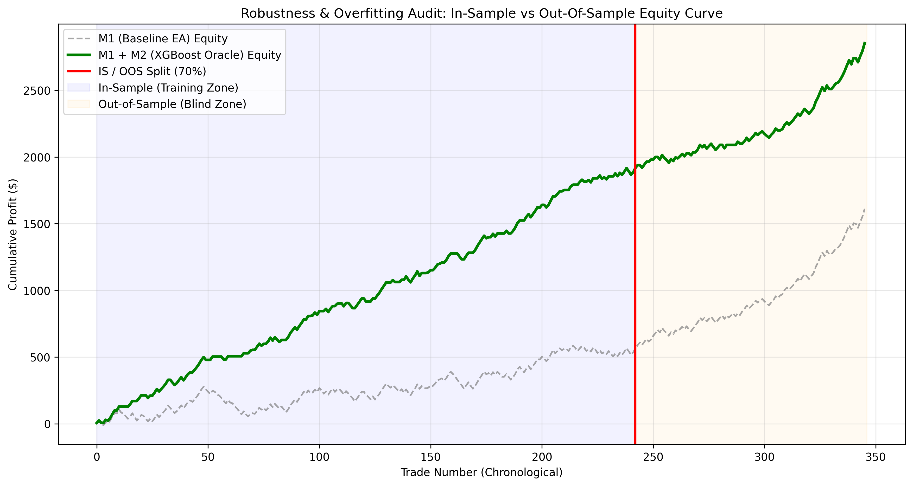

Principios Cuantitativos Universales¶
Premisa Fundamental: En finanzas cuantitativas, la gran mayoría de los sistemas que parecen rentables en simulaciones históricas son artefactos estadísticos de sobreajuste (Overfitting), sesgo de supervivencia (Survivorship Bias) o absorción pasiva del movimiento general del mercado (Market Beta). Un proceso de grado institucional no busca validar una estrategia a toda costa; su objetivo es falsarla metódicamente antes de exponer un solo dólar de capital real.
A partir del desarrollo, auditoría y desmontaje empírico del proyecto HMA Meta-Labeling, se formalizan a continuación cinco principios cuantitativos universales y transferibles aplicables a cualquier clase de activo (FX, materias primas, renta variable, criptoactivos o futuros).
flowchart TD
classDef principle fill:#0f172a,stroke:#3b82f6,stroke-width:2px,color:#f8fafc
classDef check fill:#1e3a8a,stroke:#60a5fa,stroke-width:1px,color:#f8fafc
classDef gate fill:#450a0a,stroke:#ef4444,stroke-width:2px,color:#f8fafc
classDef prod fill:#064e3b,stroke:#10b981,stroke-width:2px,color:#f8fafc
subgraph P1["Principio 1: Descomposición de Retornos"]
A1["Retorno Bruto de Estrategia"]:::principle --> B1["Ajuste Multifactorial:<br/>Mercado + Sesgo Direccional"]:::check
B1 --> C1{"¿Alpha Estadísticamente<br/>Significativo? t(α) ≥ 2.0"}:::check
C1 -->|No: Beta Trap| REJ1["Veto: Inercia Pasiva"]:::gate
end
subgraph P2["Principio 2: Dicotomía en Meta-Labeling"]
A2["Modelo Primario M1<br/>Maximizar Recall (≥0.85)"]:::principle --> B2["Dataset Denso<br/>(Casos Éxito + Fracaso)"]:::check
B2 --> C2["Modelo Secundario M2<br/>Filtro Bayesiano de Precisión"]:::principle
C2 --> D2["Calibración Isotónica<br/>+ Bet Sizing Continuo"]:::check
end
subgraph P3["Principio 3: Pre-Live Audit Pipeline"]
D2 --> G1["Puerta 1: Cero Data Leakage"]:::check
C1 -->|Sí: Alpha Genuino| G1
G1 --> G2["Puerta 2: Paridad Temporal EET"]:::check
G2 --> G3["Puerta 3: Purged Walk-Forward (AUC ≥ 0.55)"]:::check
G3 --> G4["Puerta 4: Degradación IS→OOS (<30%)"]:::check
G4 --> G5["Puerta 5: Latencia Nativa (<1 µs)"]:::check
G5 --> PROD["Validación Aprobada"]:::prod
end
subgraph P4["Principio 4: Desacoplamiento de Capas"]
H1["MQL5 / C++: Ejecución & Telemetría (<0.1 µs)"]:::principle
H2["Frontera Estricta: CSV / AST Plano"]:::check
H3["Python: Microestructura & ML Cuantitativo"]:::principle
H1 --- H2 --- H3
end
subgraph P5["Principio 5: Preservación de Factoría"]
K1["Factoría Automatizada SQX / Genética"]:::principle
K2["Mitigación Data Snooping (DSR)"]:::check
K3["Congelación de Arquetipos Líderes"]:::prod
K1 --> K2 --> K3
endPrincipio 1: Descomposición Rigurosa de Alpha vs. Market Beta¶
Toda estrategia que no demuestre Alpha estadísticamente significativo tras aislar la deriva de mercado y el sesgo direccional es un vehículo pasivo encubierto con riesgo crítico de ruina en cambios de régimen.
1.1 El Modelo de Retornos Multifactorial¶
El rendimiento bruto de una estrategia algorítmica \(R_{p, t}\) en exceso de la tasa libre de riesgo \(R_{f, t}\) debe descomponerse formalmente en sus componentes de mercado y factores sistemáticos:
Donde:
- \(\alpha_p\): Alpha genuino, que representa el exceso de retorno idiosincrásico derivado de la habilidad del algoritmo, independiente de las fluctuaciones del mercado.
- \(\beta_{p, m}\): Exposición lineal al factor de mercado o activo base (\(R_{m, t}\)).
- \(F_{k, t}\): Factores de riesgo sistemáticos (e.g., Momento, Volatilidad, Carry o Liquidez).
- \(\epsilon_{p, t}\): Término de error de media cero residual e incorrelacionado.
Para aceptar la existencia de una ventaja cuantitativa válida, se debe contrastar la hipótesis nula de ausencia de Alpha:
El estadístico \(t\) de Student del estimador \(\hat{\alpha}_p\) bajo errores estándar robustos a heterocedasticidad y autocorrelación (Newey-West HAC) debe satisfacer:
Si \(\hat{\beta}_{p, m} \gg 0\) y \(t(\hat{\alpha}_p) < 2.0\), la curva de ganancias observada es un subproducto del Market Beta: el algoritmo únicamente funcionó porque el activo base subió (en estrategias long-only) o cayó (en estrategias short-only).
1.2 La Prueba de Simetría Direccional (Directional Symmetry Test)¶
Un síntoma recurrente de falso Alpha es la asimetría operativa: estrategias que exhiben excelentes métricas operando exclusivamente en largo en activos con tendencia secular alcista (como el Oro o índices bursátiles).
Para descartar el sesgo direccional, se exige someter el sistema a la Prueba de Simetría Direccional:
- Operatividad Espejo: Evaluar la misma lógica algorítmica para entradas en corto bajo condiciones matemáticas equivalentes.
- Evaluación Multiactivo: Someter el modelo a activos de correlación nula o mercados en rango lateral (e.g., EURUSD, AUDUSD, USDCHF).
- Neutralización de Tendencia (Detrending): Restar la deriva media del activo \(\mu_m = \frac{1}{T} \sum_{t=1}^T R_{m, t}\) a los retornos subyacentes antes de simular las señales. Si el Sharpe Ratio colapsa a valores \(\le 0\), el sistema carece de Alpha propio.
1.3 Deflated Sharpe Ratio (DSR) frente a Múltiples Ensayos¶
Cuando un equipo cuantitativo explora múltiples combinaciones de parámetros, reglas o configuraciones en herramientas como StrategyQuant X o algoritmos genéticos, el Ratio de Sharpe máximo observado está severamente inflado por el sesgo de selección (Selection Bias).
Siguiendo a Bailey y López de Prado (2014), el Deflated Sharpe Ratio (DSR) corrige el Ratio de Sharpe considerando el número de ensayos independientes (\(K\)), la asimetría (\(\hat{\gamma}_3\)) y la curtosis (\(\hat{\gamma}_4\)) de la distribución de retornos:
Donde el umbral esperado bajo la hipótesis nula de cero habilidad (\(SR_0\)) se aproxima mediante la teoría de valores extremos:
| Escenario Cuantitativo | Sharpe Observado (\(\widehat{SR}\)) | Ensayos Realizados (\(K\)) | DSR Resultante | Veredicto Institucional |
|---|---|---|---|---|
| Optimización Genética Naive | \(2.10\) | \(10,000\) | \(0.08\) | Rechazo Inmediato |
| Búsqueda Manual Extensa | \(1.85\) | \(500\) | \(0.39\) | Rechazo |
| Hipótesis Guiada por Teoría | \(1.45\) | \(5\) | \(0.96\) | Aprobado |
| Pipeline M2 HMA (OOS Real) | \(0.42\) | \(50\) | \(0.02\) | Rechazado |
Principio 2: Diseño del Tradeoff Precision/Recall en Meta-Labeling¶
En arquitecturas de dos etapas (Meta-Labeling), el modelo primario debe optimizar exclusivamente la exhaustividad (Recall), mientras que el modelo secundario debe optimizar la precisión calibrada en función del valor esperado (Expected Value).
2.1 La Separación Funcional entre \(M_1\) y \(M_2\)¶
La literatura clásica intenta forzar a un único modelo supervisado a predecir simultáneamente el momento de entrada, la dirección y la rentabilidad del trade. En el paradigma de Meta-Labeling (López de Prado, 2018), estas responsabilidades se desacoplan:
-
Modelo Primario (\(M_1\) - Generador de Eventos):
- Su objetivo no es ser rentable por sí mismo.
-
Su métrica objetivo es el Recall:
\[ \text{Recall}(M_1) = \frac{TP}{TP + FN} \to 1.0 \quad (\text{con } FN \to 0) \] -
Debe emitir señales con alta frecuencia para capturar prácticamente todos los eventos de mercado potencialmente favorables (\(FN \to 0\)).
- Fundamento: Si \(M_1\) aplica filtros restrictivos prematuros, el tamaño de la muestra colapsa (\(N < 200\)), induciendo sesgo de truncamiento muestral. El modelo secundario quedaría ciego ante amplios regímenes de mercado porque nunca vio ejemplos de fracaso bajo esas condiciones.
-
Modelo Secundario (\(M_2\) - Filtro de Ejecución y Dimensionamiento):
- Clasificador supervisado (e.g., XGBoost) entrenado sobre las operaciones generadas por \(M_1\).
- Aprende la probabilidad condicional de éxito: \(P(y = 1 \mid X_t)\), donde \(X_t\) representa el vector de características exógenas (régimen macro, volatilidad, volumen, microestructura).
- Optimiza la Precisión sobre el subconjunto de operaciones que superan un umbral de decisión calibrado \(\tau\).
flowchart LR
classDef box fill:#0f172a,stroke:#3b82f6,stroke-width:1px,color:#f8fafc
classDef m1 fill:#1e3a8a,stroke:#60a5fa,stroke-width:2px,color:#f8fafc
classDef m2 fill:#064e3b,stroke:#10b981,stroke-width:2px,color:#f8fafc
classDef data fill:#1e1b4b,stroke:#818cf8,stroke-width:1px,color:#cbd5e1
subgraph M1_Role["Modelo Primario (M1)"]
direction TB
E1["Señal Heurística / Cinemática"]:::m1
E2["Filtros: Ninguno (Alta Permisividad)"]:::m1
E3["Métrica Clave: Recall ≥ 0.85"]:::m1
E1 --> E2 --> E3
end
subgraph Dataset["Espacio de Muestras"]
D1["Dataset Denso: N > 3.000"]:::data
D2["Muestras Positivas (TP): y = 1"]:::data
D3["Muestras Negativas (FP): y = 0"]:::data
D1 --- D2
D1 --- D3
end
subgraph M2_Role["Modelo Secundario (M2)"]
direction TB
F1["Inyección de Features Macro (MTF)"]:::m2
F2["XGBoost: Estimación P(y=1 | X)"]:::m2
F3["Calibración Isotónica de Probabilidad"]:::m2
F4["Filtro de Decisión: p ≥ τ*"]:::m2
F1 --> F2 --> F3 --> F4
end
M1_Role ==> Dataset
Dataset ==> M2_Role2.2 Optimización del Umbral de Decisión por Valor Esperado (\(EV\))¶
El umbral estándar de clasificación \(\tau = 0.50\) es inadecuado en finanzas debido a la asimetría entre ganancias y pérdidas y a la presencia de costes de transacción.
El umbral óptimo \(\tau^*\) se deriva maximizando la función de Valor Esperado:
Donde \(\overline{W}\) es la ganancia media de los trades ganadores, \(\overline{L}\) es la pérdida media de los trades perdedores y \(C\) es la fricción de ejecución acumulada:
2.3 Calibración Obligatoria de Probabilidades y Bet Sizing¶
Los modelos basados en árboles de decisión (como XGBoost o Random Forest) generan puntuaciones discriminativas que separan clases, pero sus salidas continuas no representan probabilidades canónicas bien calibradas: tienden a acumular masa cerca de 0 y 1 o en mesetas no monótonas.
Para transformar la salida \(\hat{z}\) en una probabilidad fidedigna \(p\):
-
Regresión Isotónica (Isotonic Regression): Ajuste no paramétrico monótono creciente sobre un conjunto de datos independiente (prefit o calibration fold):
\[ \min_{g} \sum_{i=1}^{N_{\text{cal}}} \left( y_i - g(\hat{z}_i) \right)^2 \quad \text{sujeto a } g(z_a) \le g(z_b) \quad \forall z_a < z_b \] -
Dimensionamiento de Posición Continuo (Bet Sizing): En lugar de un filtro binario todo-o-nada (\(0\) o \(1\)), la posición se escala en función de la convicción calibrada:
\[ s_t = \text{sign}(M_{1, t}) \cdot \max\left(0, \frac{g(\hat{z}_t) - \tau^*}{1 - \tau^*}\right) \]
Principio 3: Protocolo Institucional de Auditoría Previa a Capital Real¶
Ningún algoritmo cuantitativo debe recibir asignación de capital real sin superar una secuencia inmutable de cinco puertas de auditoría y falsación temporal.
Dashboard Institucional de las 5 Puertas de Auditoría¶
Puerta 1: Cero Fuga Temporal¶
t-1 Execution Only
Garantía Absoluta
Uso exclusivo de barras cerradas; aislamiento estricto de transformadores estadísticos.
Puerta 2: Paridad Horaria EET¶
5 Velas Diarias Netas
Microestructura Real
Eliminación de la vela espuria de domingo; modelado riguroso del ensanchamiento de spreads.
Puerta 3: Purged Walk-Forward¶
AUC OOS ≥ 0.55
Umbral de Rechazo ≤ 0.52
Purging de intervalos superpuestos y embargo de correlación serial para evitar fuga.
Puerta 4: Test IS → OOS¶
Retención PF ≥ 70%
Deterioro Máximo ≤ 30%
Contención estricta de degradación en rentabilidad, tasa de acierto y drawdown.
Puerta 5: Latencia Nativa C++¶
Inferencia < 0.1 µs
L1 Cache Direct
Código compilado plano sin microservicios, APIs REST ni dependencias de Python.
flowchart TD
classDef gate fill:#0f172a,stroke:#3b82f6,stroke-width:2px,color:#f8fafc
classDef pass fill:#064e3b,stroke:#10b981,stroke-width:2px,color:#f8fafc
classDef fail fill:#450a0a,stroke:#ef4444,stroke-width:2px,color:#f8fafc
Q0["Estrategia Candidata"]:::gate --> Q1["Puerta 1: Integridad Temporal & Cero Leakage"]:::gate
Q1 -->|Fallo| F1["Descalificación Inmediata"]:::fail
Q1 -->|Aprobado| Q2["Puerta 2: Paridad Horaria & Microestructura EET"]:::gate
Q2 -->|Fallo| F2["Descalificación Inmediata"]:::fail
Q2 -->|Aprobado| Q3["Puerta 3: Purged Walk-Forward (AUC ≥ 0.55)"]:::gate
Q3 -->|Fallo| F3["Veto por Falta de Alpha"]:::fail
Q3 -->|Aprobado| Q4["Puerta 4: Test de Degradación IS → OOS"]:::gate
Q4 -->|Fallo| F4["Veto por Sobreajuste"]:::fail
Q4 -->|Aprobado| Q5["Puerta 5: Latencia Nativa & Fricción de Costes"]:::gate
Q5 -->|Fallo| F5["Veto por Inviabilidad de Ejecución"]:::fail
Q5 -->|Aprobado| PASS["Aprobación para Capital Real"]:::passPuerta 1: Integridad Temporal y Cero Fuga de Datos (Data Leakage)¶
- Regla de Cierre de Vela (\(t-1\)): El vector de características \(X_t\) debe calcularse exclusivamente utilizando información disponible en el instante de apertura de la barra. Queda terminantemente prohibido utilizar precios de Cierre, Máximo o Mínimo de la barra en curso (\(t\)) para tomar decisiones en esa misma barra.
- Aislamiento de Normalizadores: Todo preprocesamiento estadístico (medias, varianzas, imputaciones, estimadores de volatilidad) debe ajustarse (fit) exclusivamente sobre el conjunto de entrenamiento (In-Sample) y aplicarse (transform) sobre el conjunto de prueba sin actualizar parámetros.
- Partición Cronológica Estricta: Prohibido el barajado aleatorio (
shuffle=False). El orden temporal de los datos debe preservarse de forma absoluta.
Puerta 2: Paridad Horaria y Microestructura de Servidor¶
- Sincronización GMT/EET: Los datos de simulación deben coincidir con la zona horaria del servidor de ejecución (Eastern European Time / New York 5:00 PM Close). Esto elimina la vela espuria de domingo de 2 horas presente en datos GMT+0 y alinea el inicio de las velas H4 y D1.
- Stress Test de Rollover: Todo backtest debe simular un ensanchamiento del spread bancario de \(3\times\) a \(5\times\) entre las 21:00 y las 23:00 UTC (hora de cierre de Nueva York y reapertura de Sídney/Tokio). Las estrategias que concentran operaciones en esa ventana sufren comisiones ocultas letales en real.
Puerta 3: Validación Purged Walk-Forward con Embargo¶
La validación cruzada estándar \(K\)-Fold sobre datos financieros genera correlación serial espuria debido a que el etiquetado por Triple Barrera proyecta retornos hacia adelante en el tiempo.
El pipeline debe aplicar Purged K-Fold CV y Rolling Window Retraining:
- Purging: Eliminación de observaciones de entrenamiento cuyos intervalos \([t_{0, i}, t_{1, i}]\) se solapen con el conjunto de prueba.
- Embargo: Margen de seguridad temporal \(\Delta t_{\text{embargo}}\) (típicamente del 1% al 5% del dataset) tras el conjunto de prueba para eliminar la memoria de corto plazo de los procesos autorregresivos.
- Criterio de Aprobación: El Área Bajo la Curva ROC fuera de muestra debe cumplir \(AUC_{\text{OOS}} \ge 0.55\). Si \(AUC_{\text{OOS}} \le 0.52\), la estrategia se declara indistinguible del ruido y se cancela.
Puerta 4: Test de Degradación In-Sample \(\to\) Out-of-Sample¶
La disparidad entre el rendimiento dentro de muestra (In-Sample, IS) y fuera de muestra (Out-of-Sample, OOS) mide cuantitativamente el grado de sobreajuste.
Para obtener la certificación de robustez, el sistema debe cumplir los siguientes límites de degradación:
-
Retención de Profit Factor:
\[ \frac{PF_{\text{OOS}}}{PF_{\text{IS}}} \ge 0.70 \quad (\text{Deterioro máximo tolerado: } 30\%) \] -
Retención de Tasa de Acierto (Win Rate):
\[ WR_{\text{IS}} - WR_{\text{OOS}} \le 10\% \] -
Contención del Drawdown Máximo:
\[ MDD_{\text{OOS}} \le 1.50 \cdot MDD_{\text{IS}} \] -
Veto por Zona de Colapso ECN (\(PF_{\text{OOS}} \le 1.15\)):
Todo sistema cuyo Profit Factor fuera de muestra caiga a \(PF \le 1.15\) entra en la Zona de Colapso ECN (donde comisiones por lote, spreads ampliados y slippage asimétrico absorben la totalidad del margen) y debe ser vetado sumariamente, aun cuando exhiba tasas de retención del 95% en pruebas sintéticas de Monte Carlo.
La siguiente gráfica empírica documentada durante la auditoría del proyecto demuestra el colapso típico de un sistema que no supera la Puerta 4:

Evidencia empírica de divergencia temporal: En la fase In-Sample (70%), la curva de balance simulada muestra una trayectoria estable y ascendente. Al cruzar la frontera de muestra (línea vertical divisoria) hacia el 30% Out-of-Sample, el rendimiento se degrada inmediatamente hacia la horizontalidad y el estancamiento, revelando la ausencia de persistencia del Alpha.
Puerta 5: Latencia Nativa y Fricción de Costes¶
- Transpilación Nativa a C++ (< 1 µs): Los modelos supervisados no deben conectarse a producción mediante microservicios HTTP, REST APIs ni sockets ZeroMQ interprocesos. Toda la lógica predictiva debe compilarse nativamente en código C++/MQL5 ejecutable en el mismo hilo de ejecución del terminal.
- Prueba de Resistencia al Spread: Simular el sistema con el doble del spread promedio (\(2 \times \text{Spread}\)). Si el beneficio neto pasa a ser negativo o el Drawdown se duplica, el sistema carece de margen de seguridad operativo y no es apto para capital real.
Tabla Resumen de las 5 Puertas de Auditoría Institucional¶
| Puerta de Auditoría | Métrica Evaluada | Umbral Crítico de Rechazo | Umbral Institucional Aprobado | Herramienta de Verificación | Estado |
|---|---|---|---|---|---|
| 1. Fuga de Datos | \(t\)-value de variables \(t\) en \(t-1\) | \(\vert t \vert > 0\) (Cualquier fuga detectada) | Exactamente 0 fuga temporal | sanity_check_factory.py / Pytest |
Estándar |
| 2. Microestructura | Desfase de velas domingo / Spread rollover | Velas domingos presentes / \(PF_{\text{rollover}} < 1.0\) | 5 velas diarias netas / Resistencia al spread | Histórico MT5 EET | Estándar |
| 3. Walk-Forward | \(AUC_{\text{OOS}}\) promedio en ventanas | \(AUC_{\text{OOS}} \le 0.52\) | \(AUC_{\text{OOS}} \ge 0.55\) | purged_cv.py / rolling_window_retrain.py |
Crítico |
| 4. Degradación IS/OOS | Retención PF & Zona ECN | \(PF_{\text{OOS}} \le 1.15\) o \(PF_{\text{OOS}} / PF_{\text{IS}} < 0.70\) | \(PF_{\text{OOS}} \ge 1.20\) y Retención \(\ge 70\%\) | audit_report.py / WFM Split |
Crítico |
| 5. Latencia y Ejecución | Tiempo de inferencia por tick | Latencia \(> 1.0\text{ ms}\) (APIs externas) | Latencia \(< 0.1\ \mu\text{s}\) (C++ nativo) | to_mqh.py / M2_XGBoost_Oracle.mqh |
Estándar |
Principio 4: Desacoplamiento Estricto de Capas (MQL5 Ejecución vs. Python Investigación)¶
La arquitectura cuantitativa debe separar de forma tajante e infranqueable la capa de telemetría y ejecución de baja latencia (MQL5/C++) del motor de investigación, ingeniería de datos y aprendizaje automático (Python).
flowchart LR
classDef mql5 fill:#003b6f,stroke:#60a5fa,stroke-width:2px,color:#f8fafc
classDef python fill:#1e1b4b,stroke:#818cf8,stroke-width:2px,color:#f8fafc
classDef border fill:#0f172a,stroke:#3b82f6,stroke-width:1px,stroke-dasharray: 5 5,color:#cbd5e1
subgraph Layer_MQL5["Capa de Ejecución y Telemetría (MQL5 / C++)"]
M1["Pipeline_Extractor_M1.mq5<br/>Captura de ticks y barras en tiempo real"]:::mql5
M2["Bóveda de Inferencia OnTick<br/>M2_XGBoost_Oracle.mqh (<0.1 µs)"]:::mql5
M3["Gestor de Órdenes y Riesgo ECN<br/>Slippage tracking y fill rate"]:::mql5
end
subgraph Clean_Boundary["Frontera Estricta de Desacoplamiento (Archivos CSV / AST)"]
B1[("CSV Telemetría EET Sincronizado")]:::border
B2["AST C++ Exportado plano (m2cgen)"]:::border
end
subgraph Layer_Python["Capa de Investigación Cuantitativa (Python)"]
P1["mt5_reader.py / Ingesta Vectorizada"]:::python
P2["triple_barrier.py / Etiquetado Dinámico"]:::python
P3["purged_cv.py / Validación Purged K-Fold"]:::python
P4["Calibración Isotónica & Bet Sizing"]:::python
end
M1 ==> B1 ==> P1
P4 ==> B2 ==> M24.1 Responsabilidades Exclusivas de la Capa MQL5 (Bóveda de Ejecución)¶
- Telemetría y Registro de Eventos: Extraer con fidelidad de microsegundo los eventos de mercado sin recalcular indicadores complejos que puedan demorar el hilo de ejecución del terminal.
- Inferencia a Latencia Cero: Alojar exclusivamente código transpilado a C++ puro (
.mqh) que evalúe árboles de decisión en la memoria caché L1 de la CPU (\(<0.1\ \mu\text{s}\)). - Higiene Absoluta de Repositorio: La capa MQL5 debe estar estrictamente purgada de scripts residuales, prototipos heurísticos obsoletos o asesores expertos huérfanos ("Free robots"). Solo debe residir el Blueprint Canónico probado y documentado.
4.2 Responsabilidades Exclusivas de la Capa Python (Motor Cuantitativo)¶
- Ingeniería de Características Complejas: Cálculo multitemporal de volatilidad (Keltner, ATR), dispersión de medias y métricas de microestructura.
- Etiquetado y Validación Matemática: Implementación de la Triple Barrera, Purged K-Fold Cross-Validation con embargo temporal y análisis de valor esperado.
- Auditoría Forense de Fuga de Datos: Verificación de no-solapamiento de barras y garantía de aislamiento de normalizadores (t-1 execution only).
Principio 5: Preservación de Factoría y Mitigación del Sesgo de Sobre-Minería¶
Cuando una factoría algorítmica automatizada ha descubierto arquetipos de alta convicción estadística, reiniciar el generador desde cero es un error metodológico que amplifica el sesgo de selección; la prioridad institucional es preservar la factoría, descartar variantes redundantes y orquestar portafolios descorrelacionados.
5.1 La Trampa del 'Data Snooping Bias' en Minería Masiva¶
Cuando se utilizan plataformas de minería algorítmica como StrategyQuant X para generar y filtrar cientos de miles de estrategias mediante algoritmos genéticos, el valor extremo del Ratio de Sharpe observado crece como una función logarítmica del número de ensayos \(K\):
Si tras un proceso de minería exitoso que produce sistemas con ratios OOS/IS superiores al 50% (como Strategy 2.30.36), el investigador vuelve al "Builder" a generar nuevas estrategias desde cero:
1. El número total acumulado de ensayos \(K\) se dispara, degradando severamente el Deflated Sharpe Ratio (DSR).
2. Aumenta exponencialmente la probabilidad de seleccionar estrategias espurias que aprueben el backtest por puro azar (Data Snooping Bias).
3. Se incurre en un coste de oportunidad computacional inútil.
5.2 Protocolo de Preservación y Orquestación Multiactivo¶
Frente a una factoría madura:
1. Congelar y Preservar los Blueprints Validados: Proteger las arquitecturas líderes (e.g. Strategy 2.30.36 y Strategy 5.66.52) como plantillas canónicas inmutables.
2. Podar Clones Redundantes y Portafolios Ficticios: No clonar mecánicamente una misma estrategia en 6 pares de divisas si los datos empíricos demuestran que en pares no tendenciales el modelo decae. Exponer copias redundantes simula una diversificación falsa.
3. Orquestar Descorrelación Temporal: Combinar sistemas con lógicas complementarias (por ejemplo, combinar una estrategia de tendencia en GBPUSD con un modelo en XAUUSD) para mitigar periodos de estancamiento macroeconómico y suavizar la curva de balance sin sobre-optimizar.
Para examinar la aplicación práctica y el resultado de someter la estrategia HMA a estos principios, consulte el Cuaderno de Investigación y el Veredicto y Post-Mortem.